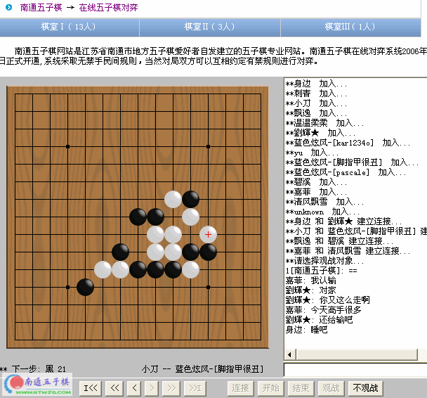

首页
站务管理
本站在线对弈系统采用碧海银沙的服务器，我们进行了外围包装并提供一个入口。
值得说明的是，此程序需要调用java，请确保已经安装java虚拟机可以访问。〔说的简单一点，如果您能看到本站的在线棋谱，那就没有问题了〕
要想在线实时对弈，也必须登录之后！
在线对弈，进入在线对弈之后可以网友之间对弈，也可以和电脑下〔电脑水平很差〕
登录之后选择顶端“功能菜单”下拉“在线对弈”
界面：
房间：我们共提供三个房间，默认进入第三个房间